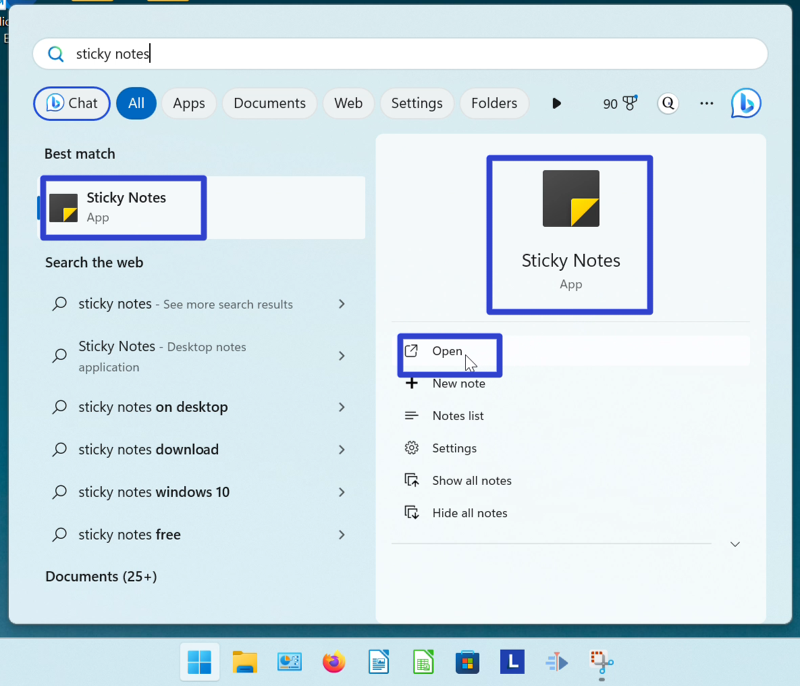
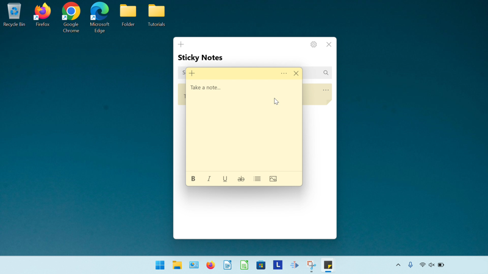

How to Open the Microsoft Sticky Notes App (Windows 11)
This tutorial covers:
No time to scroll down? Click through this tutorial presentation:
Watch a tutorial video here:
What is the Microsoft Sticky Notes App?
Sticky Notes is a note-taking app that comes with Windows 11. Notes can have formatted text (bold, italic, underline, strikethrough, and bulleted lists), images, and recognized URLs. For further customization, choose from seven different colors of sticky notes and a “Dark” mode for the app.
How to Open the Sticky Notes App With Search
- Step 1: Go down to the taskbar and click Start (four blue squares).

- Step 2: In the Start window that opens, click the top search bar and type “sticky notes”.

- Step 3: On the search results screen, click one of the following to open the Sticky Notes app. 
- Step 4: The Sticky Notes app opens. 
Save a copy of these instructions for later with this free PDF tutorial.